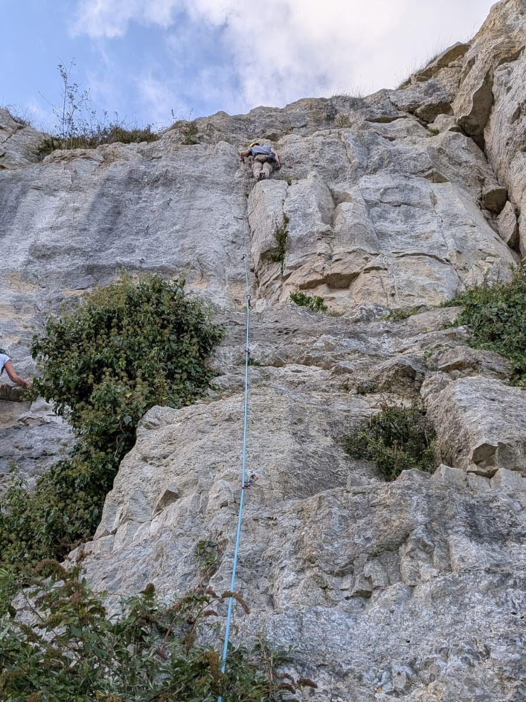
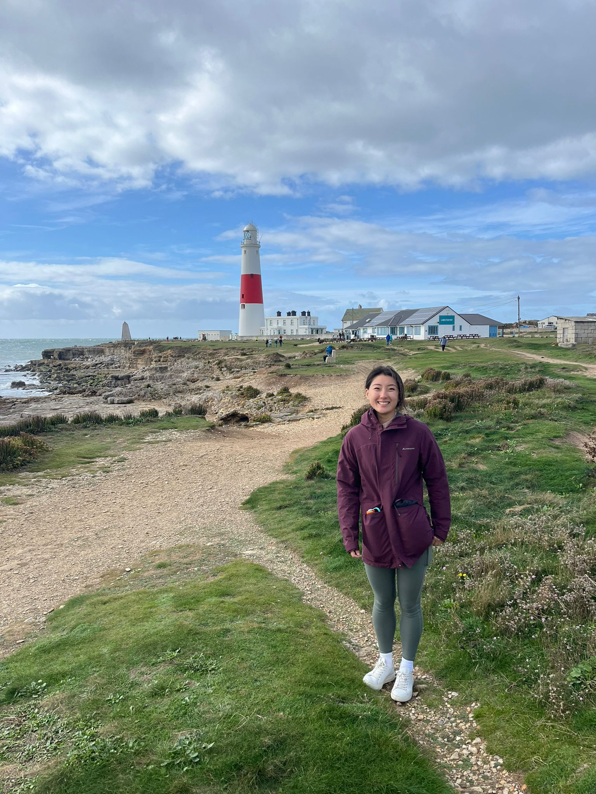

3rd October 2025
Friday night we had hopped in Matt and Louise's car for the 3h drive to Portland. as we got closer we realised just how strong the wind was as we pulled into Aldi. We could barely open the card doors as the wind, fresh from the English channel, battered the car. The wind and rain didnt spell out a good omen for the weekend as it continued onto Saturday. We made a journey to the top of a hill in gusts string enough to blow us over if we weren't on alert. After exploring the venue of olympic watersports and devouring pastries and sandwiches we decided it was dry enough to try our at the cliffs. There is almost a divide in the climates between the East and Western edges of the island despite there only being a few kms deparating them. the West was experiencing wind and rain while we hoped that the East had stayed dry and calm enough for us to climb. Sure enough when Matt and I arrived there was a multitude of climbers already on the cliffs and had been since this morning! We quickly jumped on some "easy" climbs to start but I all to quickly discovered that feeling of dread that follows climbers who haven't been outdoors for several months. A tricky roof move on Opus, a 5a+, stumpede for more than a few minutes and Matt was itching to climb after I finally completed the supposed warm up climb. Afterwards we moved across to Two fingers, a more technical 5b. Again, the dread of falling halted my progress on some thin footholds but a decent crack for hands, a style of climbing I hadn't encountered until then. Nonetheless we both made it up and moved on to the final climb as sunset approached. I struggled on somewhat featureless face after using the arrete to make my way partially up the cliff but got stuck and had to come down. Matt also struggled but his commitment had him finally stick the move up the wall. Only later were we to find out we had neglected the proper route bridging between a wall face more to iur left... Overall a beautiful crag to climb at with views out into the channel which werent to he scoffed at either. We topped it off with delicious fish and chips at the local chippy.

4th October 2025
After packing up in the morning, we tried our luck on the West side but quickly turned back after the full force of the NW winds nearly blew us off the cliff. To a different location further South then Saturday we went. Perfect weather although we got slightly lost on the way to the crag. We started again on our warm up but again our route finding skills failed us. instead of a 5a we both failed trying to get up a short 6b+. After help from some other climbers and our egos restored we found another easier but longer route to climb and did so with ease. Even though this was below my skill level it was nice to get on some decent holds and properly focus on technique, especially cleaning anchors. Our last climb was the perfect mix of gold holds but challenging moves. I fell off more than a few times and one was from near the top a meter or two above my last clip. No damage to me apart from my ego as a hiker on the cliff above enquired "Did you mean to do that?". We hopped in the car back to London feeling very pleased and exhausted.